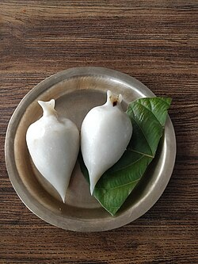

Yomari's Recipe

To make Nepali Yomari, start by preparing the dough by mixing rice flour
with warm water until it becomes a smooth, soft, and non-sticky dough,
then let it rest for 10–15 minutes. For the filling, gently heat chaku
until it melts, then mix in grated coconut, sesame seeds, a little ghee,
and optionally some cardamom powder, and let it cool slightly while
keeping it soft. Wet your hands, take a small portion of the dough, and
shape it into a cone by pressing the center and thinning the walls evenly.
Fill this cone with the warm chaku mixture and pinch the top to seal it
completely. Place the shaped yomaris in a steamer and steam them for 10–15
minutes until the rice dough turns shiny and fully cooked. Serve them warm
while the outer shell is soft and the inside is sweet and gooey.
Ingredients
- For the Dough
- 2 cups rice flour
- 1.5–2 cups warm water
- 1 tbsp ghee (optional, for smoother dough)
- For the Filling (Chaku Mixture)
- 1 cup chaku (molasses)
- ½ cup grated coconut (optional but traditional)
- 1 tbsp sesame seeds (til)
- 2 tbsp ghee
- A pinch of cardamom powder (optional)
Steps
-
Prepare the Dough
- Boil water until hot (not boiling rapidly).
- Pour the hot water slowly into the rice flour while stirring.
- Knead until you get a smooth, soft, non-sticky dough.
- Cover it and let it rest for 10–15 minutes.
-
Prepare the Filling
- chaku on low flame until it softens and melts.
- Add grated coconut, sesame seeds, and ghee.
-
Mix well and let it cool slightly (but keep it soft and spreadable).
-
Shape the Yomari
- Take a small ball of dough and smooth it with wet hands.
-
Make a cone shape by pressing the center and thinning the walls.
- Fill the cone with warm chaku mixture.
- Pinch and close the top to seal it completely.
-
Steam the Yomari
- Place the shaped yomaris in a steamer.
-
Steam on medium heat for 10–15 minutes until the dough looks shiny
and cooked.
Home